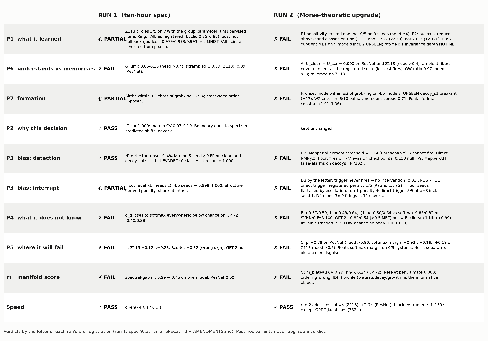
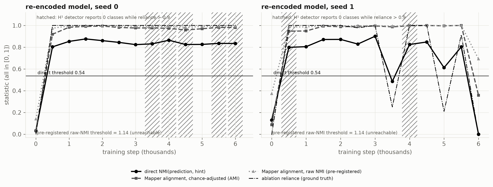
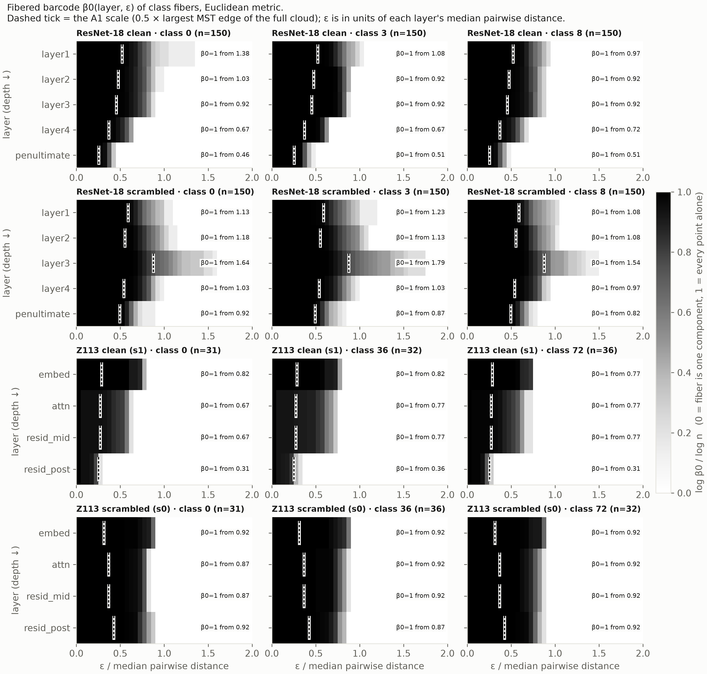
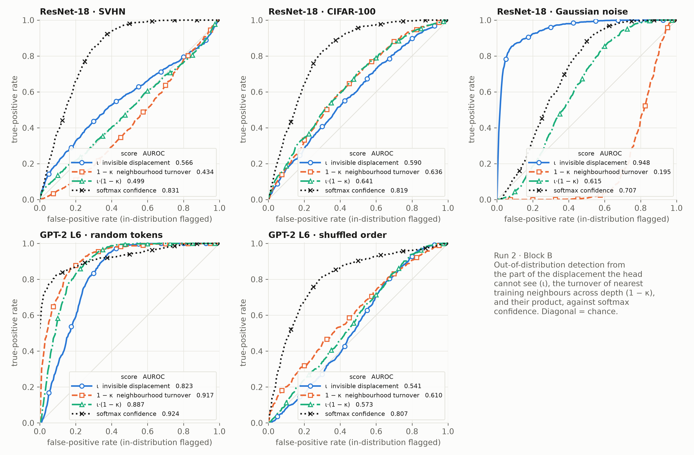
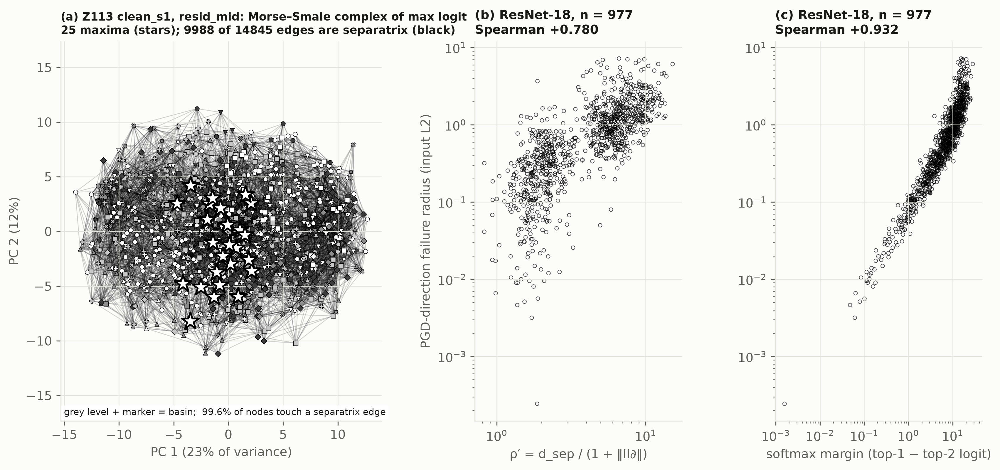
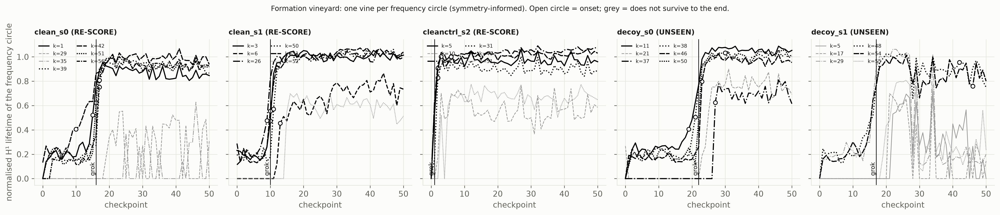
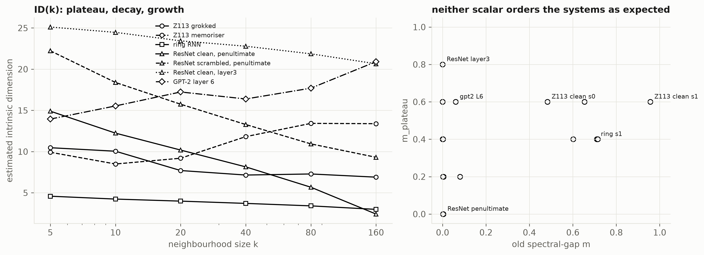

Run 1 failed most of its pre-registered cells, each for an identified structural reason. Run 2 built the object each reason pointed at — depth profiles of class fibers, kernel displacement, the Morse–Smale complex of the output, functional alignment, sensitivity-ranked cohomology, a formation vineyard, a plateau-based manifold score — pre-registered a threshold for every one, and ran them.
By the letter, no Run-2 block passes. Every new instrument was first verified on planted ground truth, so these are negatives about the quantities, not about the code. Softmax confidence, entropy and margin remain unbeaten wherever they apply.
What survives is smaller and firmer. The evasion result is reproducible and deterministic. The statistic that catches the re-encoded model is a plain functional test, not a topological one — shape can be evaded, function cannot, and function needs the nuisance to be known. The Z₂ quotient of Z113 answer-fibers replicates on two models nobody had looked at. And the one block that was saved from a false pass was saved by an unseen model.

| Block | Pre-registered criterion | Measured | Verdict |
|---|---|---|---|
| G · manifold score | bootstrap CV < 0.15 everywhere; ResNet penultimate > 0; ordering Z113 > ring > ResNet > GPT-2 | CV 0.00 / 0.29 / undefined / 0.24; ResNet penultimate 0.000; ordering 0.60, 0.40, 0.00, 0.60 | ✗ FAIL |
| E1 · unsupervised naming | ≥4 of top-5 H¹ classes by output sensitivity named at r > 0.9, no group parameter | 0 of 5 on three seeds; best r among 30 candidates 0.45 / 0.07 / 0.07 | ✗ FAIL |
| E3 · quotient | Z₂ witness on every Z113 model; a rot-MNIST invariance depth exists | Z113 met on 5 models including 2 unseen; rot-MNIST not met | ◐ half |
| D2 · alignment vs evasion | raw Mapper NMI above clean mean + 3σ on every evasion checkpoint | threshold 1.139 — above the maximum of NMI; cannot fire on any model | ✗ FAIL |
| D3 / D4 · interrupt | decorrelated accuracy > 0.98 on 5/5 seeds; stays clean for 2× the steps | by the letter the trigger never fires. Post-hoc trigger: registered penalty 1 of 5 (schedule R) and 1 of 5 (G); run 1's penalty 5 of 5 | ✗ FAIL |
| A · P6 depth profile | Uclean − Uscr > 0.4 on ResNet and Z113; GWscr > 2 × GWclean | 0.000 and 0.000 (kill test fires); GW ratio 0.97, reversed on Z113 | ✗ FAIL |
| B · P4 kernel displacement | one score beats softmax confidence and entropy on SVHN and CIFAR-100; GPT-2 ι > 0.5 | ι 0.57 / 0.59, 1−κ 0.43 / 0.64, ι(1−κ) 0.50 / 0.64 vs 0.83 / 0.82; GPT-2 ι 0.82 / 0.54 | ✗ FAIL |
| C · P5 Morse–Smale | ρ′ > 0.90 on ResNet, > 0.5 on Z113; beats softmax margin somewhere | +0.78; +0.19 / +0.18 / +0.16; 0 of 5 systems | ✗ FAIL |
| F · P7 vineyard | onset mode within ±2 of grokking on every seed; W2 below null; spreads < 30% | 4 of 5 seeds (unseen decoy_s1: +27); 6 of 10 pairs; vine-count spread 0.71 | ✗ FAIL |
A monitor that certifies a property of the representation's shape, used as a training signal, can be satisfied by a re-encoding that leaves the function unchanged.
Run 1: three consecutive checkpoints with zero detected H¹ classes at ablation reliance 1.000. Run 2, regenerated from the same seed and code with checkpoints saved: the trajectory reproduces step for step, and on seed 0 the detector is silent at five of the last six checks (steps 3500, 4000, 4500, 5500, 6000) while reliance is 1.000 and accuracy on the decorrelated test is 0.014.
The model had to be regenerated because run 1 never checkpointed it; that is amendment A-1, written before any Run-2 number existed, with the condition that the evasion must reproduce before anything was tested on it. It did.

The brief's detector was the mutual information between two Mapper graphs of the layer — one built with the prediction as lens, one with the nuisance. With about a thousand Mapper nodes for two thousand points, raw NMI is near 0.87 on every model, so the registered threshold (clean mean + 3σ) evaluates to 1.139 and nothing can fire. That bias was anticipated and a chance-adjusted version was registered as a secondary before any number existed. Adjusted, it separates shortcut from clean (0.96–1.00 against ≤ 0.12) — and false-alarms on 44 of 102 decoy checkpoints, where the hint is present, represented, and provably unused. It sees that z is represented, not that z is used: the shape detector's weakness, inherited.
The statistic SPEC2 registered as the floor — the dependence of the prediction on the hint, on a probe where the hint is independent of the answer — fires on all 7 evasion checkpoints, on 50 of 51 checkpoints of each shortcut model, and on 0 of 153 clean and decoy checkpoints. It is the ablation ground truth in another form. So the headline is not a new detector. It is the asymmetry: shape can be evaded by re-encoding; function cannot; and function needs the nuisance to be known.
By the letter there is nothing to score: the registered trigger cannot fire, so the registered interrupt is the no-intervention run (decorrelated accuracy 0.012–0.016). Run post-hoc with the floor statistic as trigger, three things came out.
The brief's "generalised" penalty is worse than the one it generalises. Output invariance across uniformly drawn hint values cleared the shortcut on 1 of 5 seeds under both schedules (0.011 / 0.010 / 0.009 / 1.000 / 0.010). With z′ uniform, a present hint is compared with "no hint" about once in 114 samples, and run 1 had already found that presence-invariance is the part that matters.
Escalation destroys models. Every model pushed past λ = 3 — to 300 under the registered schedule, to 81 under the gentler one — ended at accuracy 0.01: the shortcut gone and the task with it. Every success, in either run, happened at λ = 3 in one round.
Run 1's penalty with the earlier trigger clears five of five (0.999 / 1.000 / 1.000 / 1.000 / 1.000), including the seed that failed under both schedules in run 1. The functional trigger fires at step 500 on every seed; the H¹ detector had been one or two checkpoints late on three of them, and for that seed one checkpoint was the difference. On the one registered-penalty seed that passed, the shortcut did not come back: no firing in twelve checks over twice the original training length. All of this is post-hoc, one run per seed, not topological, and needs the nuisance to be known.
Ranking the 30 longest-lived H¹ classes of the planted models by output sensitivity over local dimension does not surface the shortcut: the class that best tracks the hidden hint correlates with it at only 0.38–0.55 and ranks 12th–29th of 30 in seven of eight checkpoints examined.
In the ambient metric, class fibers do not connect at the registered scale at any layer of either network. Distances concentrate: at half the scale where the whole cloud connects, the cloud is 1,459–1,487 isolated points of 1,500, and a fiber becomes one piece only at 0.92–0.99 of that scale. The untangling index is 0.000 for generaliser and memoriser alike on both systems, and the kill test fires. Gromov–Wasserstein distortion to the input fiber does not track memorisation — ratio 0.97 on ResNet where 2 was required, and reversed on Z113, where it is the generaliser that builds structure.
Seen after the fact, with no null and not claimed: the scale at which a fiber becomes one piece, in units of the layer's median distance, falls with depth in the generalisers (ResNet class 0: 1.38 → 0.46; Z113: 0.82 → 0.31) and barely moves in the memorisers (1.13 → 0.92; 0.92 → 0.92).

The diagnosis was that out-of-distribution inputs are displaced along directions the head ignores. On near-OOD images the opposite holds: the invisible fraction of the displacement scores 0.33 on both SVHN and CIFAR-100 — below chance — and the visible part (0.70) beats the kernel part (0.57 / 0.59). Only Gaussian noise fits the picture (0.95 against softmax 0.71). On GPT-2 the kernel score clears chance (0.82 / 0.54, from 0.40 / 0.38), but the kernel there is 704 of 768 dimensions and the score is Euclidean nearest-neighbour distance under another name (rank correlation 0.993–0.999). Neighbourhood persistence across depth has no consistent sign: on one Z113 set it is a near-perfect detector with the wrong sign (0.006–0.018).

On planted landscapes the construction is exact: two basins, separatrix on the known boundary, distance to it correct to 2%, curvature of a circular boundary within 1% of 1/R. On real systems it does not beat the top-two logit gap anywhere (ResNet +0.78 against +0.93; Z113 +0.16 to +0.19 against +0.21 to +0.30; GPT-2 null). On ResNet the separatrix distance is run 1's manifold margin again (rank correlation 0.974). Where classes are many and sparsely sampled — Z113, GPT-2 — 67–73% of all graph edges are separatrix edges, more than 96% of nodes touch one, and basins of confidence are not classes (4–8% agreement). Softmax margin is not a separatrix distance in disguise: the gap is 0.07–0.72, never within the registered 0.02. The registered curvature fit is under-determined (45 unknowns, 30 points) and lowers the ResNet correlation.

Ranking by output sensitivity re-orders debris; it cannot create classes the filtration never formed. The representation is a 2-torus wound at five frequencies, and 1,200 samples of it do not put neighbouring residues next to each other in any metric: Rips returns about two thousand short bars, the longest 1.4× the noise band. The brief's prediction that the pullback metric collapses debris holds where the manifold is one densely sampled circle (ring: 2 → 1 above the band, the true one) and on GPT-2 (22 → 0), and fails on Z113 (12 → 26).
On five grokked models — three seeds, two data fractions, with and without decoy hint tokens, two of them never examined before the criterion was written — the answer-fiber's image in each frequency plane is a segment (axis ratio 0.017–0.044), the b = 0 orbit in the same planes is a circle (0.996–0.999), and swapping operands moves the representation by 0.3–0.8% of the fiber radius. The learned invariance is (a, b) ↦ (b, a); the fiber is S¹/Z₂. This is Run 2's one confirmatory positive. The rot-MNIST half fails by the letter: both the trained and the untrained network lose the certified circle at the same layer, and only the graded gap (0.22, then 0.28) distinguishes them.
On four of five models the circles are born in a burst within one checkpoint of grokking, five vines each, and the peak normalised lifetime is a constant of the architecture (1.01–1.06). The fifth — an unseen model — breaks every cross-seed criterion: its circles rise at grokking like the others, then are knocked down again and again for twenty-five checkpoints while test accuracy reads 1.00, so only two vines satisfy "certified from here to the end". Without that model this block would have passed.

The plateau score fails on all three counts: unstable under bootstrap on the ring and GPT-2, exactly zero on the ResNet penultimate layer, and it ranks GPT-2 level with Z113. The curve it is computed from is the useful object. Estimated dimension against neighbourhood size shows a plateau on grokked Z113 (7–7.5 from k = 20 to 160, all seeds), decay on the ring and every ResNet layer — fastest at the penultimate layer, 14.9 → 2.4, which is what ten tight clusters look like — and growth on GPT-2 and on the Z113 memoriser. The old score's 0.00 on ResNet was not a miscalibration: a second instrument agrees that the last layer of a trained classifier is not manifold-like at one scale.

SPEC2.md was written before any computation, including the operational choices the brief left open and a list of what run 1 had already seen. Cells scored on seen data are marked RE-SCORE; unseen models were named in advance, and they decided two blocks (E3 for, F against).| What | Where (under ~/blindinglight) |
|---|---|
| Pre-registration and amendments | SPEC2.md · AMENDMENTS.md · brief docs/RUN2_BRIEF.md |
| Scorecards, both runs | CLAIMS.md · figures/grid_both_runs.png |
| Pause reports | PAUSE_1.md … PAUSE_4.md |
| Per-block findings | FINDINGS_A.md … FINDINGS_G.md |
| Numbers | results/run2/ · interrupt runs runs/r2_* |
| New library packages | whiteboxtopo/depthprofile · kernel · morse · tests tests/test_run2_*.py |
| Demo with run-2 outputs | logs/demo_run2_transcript.txt · python analysis/demo_run2.py |
| Run-1 report | report/whitebox-report.html |